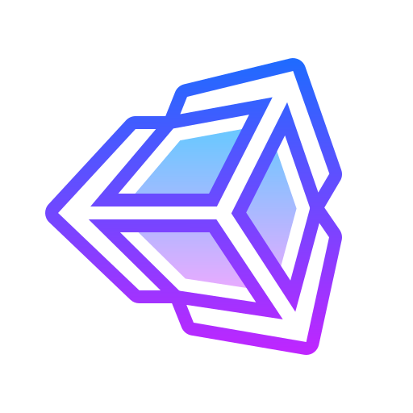

Что такое Unity? О преимуществах работы
Unity — это кроссплатформенный игровой движок, созданный компанией Unity Technologies в 2005 году. С его помощью делают одиночные и многопользовательские игры с современной 2D- и 3D-графикой для таких платформ, как ПК, PlayStation, Xbox, Nintendo Switch.
Также на Unity создают игры для браузеров и устройств, работающих на Android и iOS. С помощью Unity можно делать игры с использованием технологий AR и VR. Технологии Unity используются в кино для создания компьютерной анимации, а также в промышленности для разработки иммерсивных 3D-приложений для AR и VR.
Unity — это современный движок, который позволяет делать игры с современной графикой. Его преимущества можно перечислять очень долго. Пройдёмся по основным.
Unity отлично работает с мобильными платформами
В Unity очень легко внедрить инструменты, которые отвечают за монетизацию игр.
У Unity низкий порог вхождения Порой можно наткнуться на мнение, что Unity это скорее конструктор игр, чем в привычном понимании.

Unity — отличный инструмент для прототипирования
Все объекты в Unity собираются из компонентов, которые очень легко удалять и добавлять.
Лёгкое создание игр под разные платформы
При этом использовать Unity вы можете не только на Windows, но и на macOS.
Игру в Unity можно целиком собрать из чужих моделей, спрайтов, кода, расширений для движка и всего остального. Всё это можно найти в Unity Asset Store, зайти в который можно прямо в движке. Есть множество бесплатных моделей. Платных вариантов, разумеется, гораздо больше.
Минусы работы на Unity
Минусов у игрового движка Unity тоже хватает, хотя плюсов на чаше весов всё же больше. Вот основные проблемы, о которых надо знать.
За кодом сложно уследить
Если у вас простенькая игра, то вы напишете с десяток скриптов, и в целом всё будет нормально.
Проблемы с производительностью производительность игры может быть ниже, чем если бы ту же игру сделали при помощи инструментов.

Мобильный гейминг в приоритете
Не столько минус, сколько реальность, к которой стоит быть готовым.
Системные требования. В зависимости от сложности вашего проекта и его графики требования к компьютеру могут различаться. Но минимальные системные требования для версии Unity 2022.3, необходимые, чтобы редактор просто запускался и работал на Windows, такие:
- Операционная система: Windows 7 (SP1+), Windows 10 и Windows 11, только 64-битные версии.
- Процессор: архитектура x64 с поддержкой SSE2.
- Графический API: DX10, DX11, и DX12, поддерживаемый GPU.
- Windows 7 (SP1+), Windows 10 и Windows 11.
- Windows 7 (SP1+) Для запуска игры в Unity Player есть отдельные минимальные системные требования
Системные требования
Unity предлагает несколько тарифных планов. Если вы частное лицо и просто хотите делать игры на Unity и продавать их, то можете использовать Unity Personal — это бесплатная базовая версия Unity, включающая также учебные материалы для начинающих. Unity Personal могут использовать также небольшие организации.
Но есть ограничение: денежный оборот или объём привлечённых инвестиций за последние 12 месяцев не должен превышать 100 тысяч долларов. Эта сумма по-прежнему указана в разделе сайта с тарифными планами, но в 2023 году в компании заявили, что порог дохода от продаж игр увеличится со 100 до 200 тысяч долларов. При этом тарифном плане каждая ваша игра будет сопровождаться загрузочным экраном с логотипом Unity.
Если доход физического лица или команды либо финансирование составляет более 200 тысяч долларов за последние 12 месяцев, то надо использовать тарифный план Unity Pro. Среди плюсов, которые предоставляет этот тарифный план, — возможность, например, добавить в игру физический движок Havok Physics (по умолчанию Unity использует собственный физический движок Unity Physics).